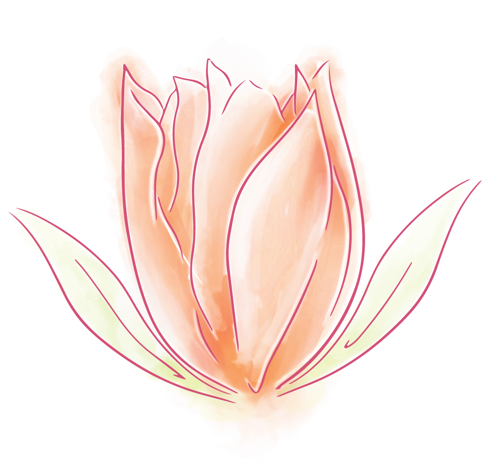

05. TULIPS
TULIP
Tulipa Gesneriana
Appearing cute and delicate are tulips—the bulbous perennial plant of the family Liliaceae (lilies) and the genus Tulipa. Tulips are solitary upright flowers with strong and bright colors. You know the type of love that overpowers every other feeling, the one that fills up your whole body? Well, tulips symbolize this emotion perfectly, as they represent a “perfect love” or “perfect lover.” It embodies an absolute romance, a declaration of love, and elegance. Tulips also symbolize overwhelming attraction, and is associated with sensuality, advancement, and lust. If you know your lover is “the one” for you, then this is the flower to send!

